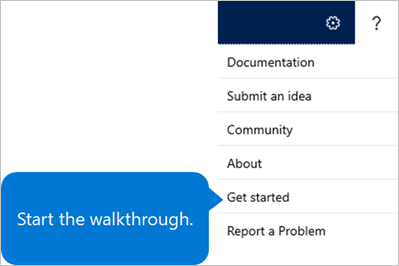

Get the Onboard app
Important
Dynamics 365 Talent: Attract and Onboard apps are being retired. Learn more at Retiring Dynamics 365 Talent: Attract and Onboard apps.
You can view a demo and try the Microsoft Dynamics 365 Talent: Onboard app for free from the Onboard product page.
Note
The free trial requires a business email account.
You can purchase a subscription to Onboard as either a stand-alone app or part of Dynamics 365 Talent. For more information about how to purchase Onboard, see the Onboard product page.
During the trial or purchase process, you will set up your Microsoft 365 email address and password. Be sure to make a note of these values.
Warning
You can't migrate data from your trial to your paid subscription environment.
To find out about new features in Talent, see What's new or changed in Dynamics 365 Talent and Dynamics 365 and Power Platform release notes. If you want to preview new features in Onboard, see Access preview features in Microsoft Dynamics 365 Talent.
If you're an IT professional and want to learn more about how the two versions of the Onboard app are provisioned, see Provisioning for the Dynamics 365 Talent - Onboard app (This is an external linThis link was changed due to HTMLfromRepoGenerator).
Get started with Onboard
When you open Onboard for the first time, you're invited to start a tour of the Microsoft 365 admin center. The admin center is where you set up your organization, manage users, and manage your subscriptions. (One of those subscriptions is your Onboard subscription.) For more information about the Microsoft 365 admin center, see About the Microsoft 365 admin center.
To get to the Onboard app, follow these steps.
Open the Microsoft sign-in page.
When you're prompted, enter your Microsoft 365 email address and password.
Select the app launcher in the upper left, and then select Dynamics 365.

Select the Talent: Onboard tile.

Your first sign-in might take a few minutes, because the environment must be initialized.
Try the walkthrough
When you first open Onboard, you can select Start the walkthrough to get started with a working template.
If you skip the walkthrough, you can access it later by selecting the Help button (?) and then selecting Get started.

Change the domain name
If you accepted the default domain name when you signed up with Onboard, you can change it to another domain later. (The default domain name ends in onmicrosoft.com.)
- Open the Microsoft sign-in page.
- When you're prompted, enter your Microsoft 365 email address and password.
- If you see a recommendation to add your own domain under Recommended for you, select View recommendation, and follow the prompts. If you don't see the recommendation, select Show all on the menu on the left, select Setup, select Domains, and then select either Add domain or Buy domain. Then follow the prompts.
Next steps
- Create an onboarding guide
- Create an onboarding template
- Edit onboarding guides and templates
- Share content with other contributors
- View the status of tasks and onboarding employees
- Create hiring teams in Onboard